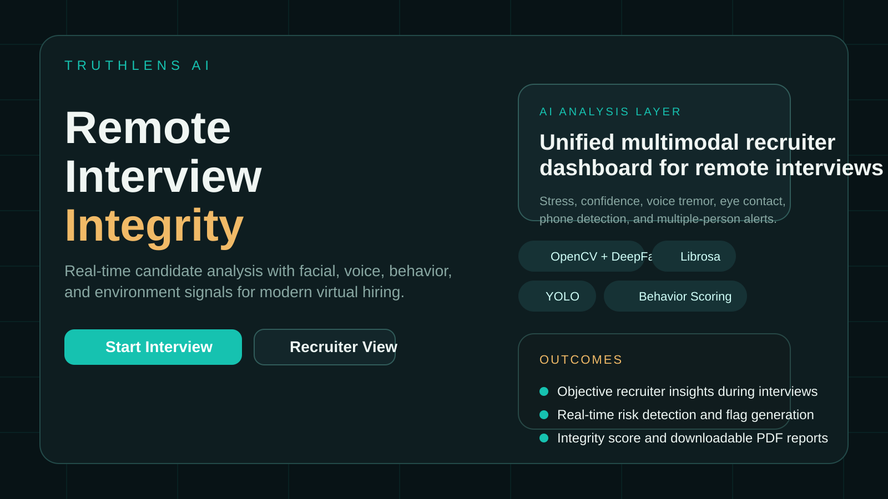
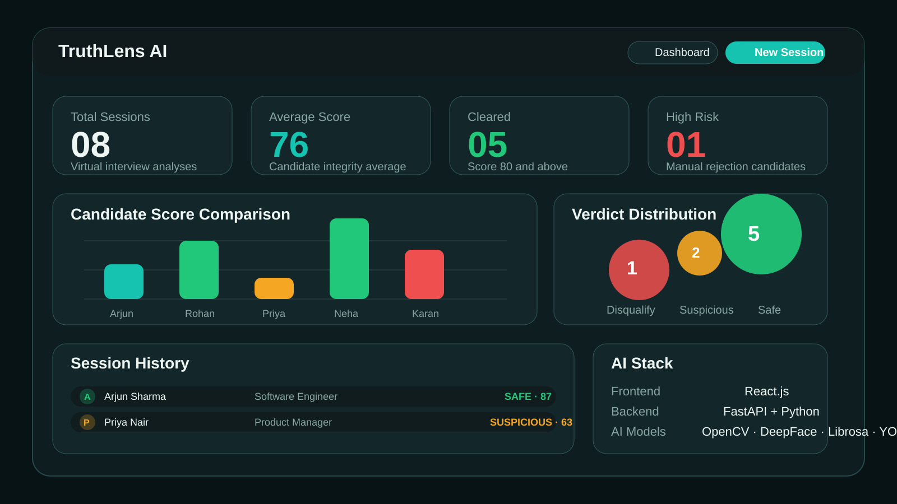
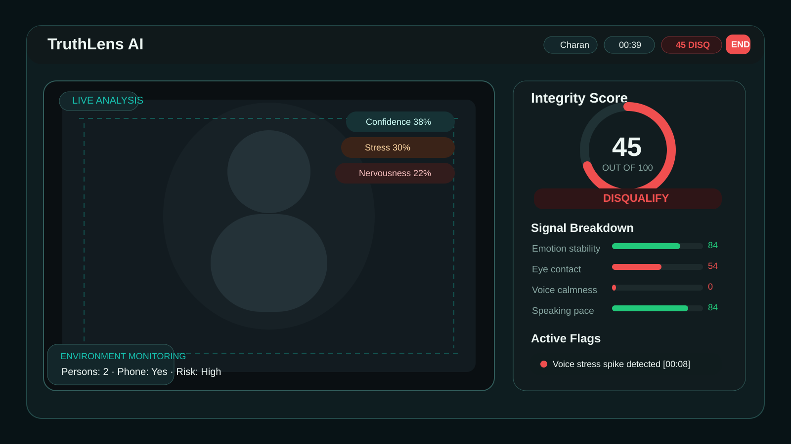

A real-time interview integrity platform for remote hiring that combines facial cues, voice stress, behavior tracking, and environment monitoring into one recruiter-facing decision support system.
TruthLens AI addresses a growing challenge in remote recruitment: during virtual interviews, recruiters often rely on subjective judgement to evaluate candidate confidence, emotional stability, and authenticity. That approach is inconsistent, difficult to scale, and vulnerable to hidden bias or missed warning signals. TruthLens AI introduces a unified digital platform that observes webcam, microphone, and interview-environment signals in real time and converts them into structured behavioral intelligence.
The platform combines facial authenticity analysis, voice stress monitoring, behavioral cue detection, and environment integrity checks into one recruiter workflow. It provides a live integrity score, dynamic flags, trend summaries, and a downloadable interview report. The project is built with a React.js frontend, a FastAPI backend, and a Python-oriented AI model pipeline designed for OpenCV, DeepFace, Librosa, and YOLO integration.
Virtual interviews make it harder to assess whether a candidate is genuinely confident, under stress, receiving outside assistance, or displaying suspicious behavior. Existing workflows do not combine face, voice, and environment intelligence in a single accessible system.
Hiring decisions made from incomplete cues can lead to poor candidate selection, inconsistent evaluation standards, and limited trust in remote interviewing at scale.
Traditional interviews depend on the interviewer’s experience and attention span, which vary widely across sessions and organizations.
Most tools focus on video conferencing, not integrated analysis of face, voice, and scene-level suspicious behavior.
Stress spikes, repeated looking away, and environment-level anomalies are difficult to capture manually in real time.
Recruiters rarely receive structured evidence or review-ready summaries to support final decisions after an interview ends.
TruthLens AI acts as an interview intelligence layer on top of a live video interview. The frontend captures candidate media signals and session interactions. The backend organizes the session state, computes weighted behavioral metrics, and returns recruiter-ready snapshots. The AI layer is designed to plug in facial analysis, audio processing, and object detection models without changing the UI contract.
Webcam, microphone, and environment cues are collected from the browser.
Face, voice, and object-detection models extract structured behavioral evidence.
Signals are weighted into a live integrity score with flags and risk labels.
Recruiters receive a live dashboard and a final downloadable summary.
| Layer | Technology | Role in the System |
|---|---|---|
| Frontend | React.js, Vite, Chart.js, jsPDF | Provides the landing page, recruiter dashboard, live interview screen, analytics views, and downloadable PDF reports. |
| Backend | FastAPI, Python | Handles session orchestration, signal fusion, scoring logic, dashboard endpoints, and final report assembly. |
| Vision AI | OpenCV, DeepFace | Extracts facial emotion, expression stability, confidence, stress, and nervousness patterns. |
| Audio AI | Librosa | Supports stress-oriented audio feature extraction such as calmness, tremor, pacing, and pitch variation. |
| Environment AI | YOLO | Detects phones, multiple persons, and suspicious objects in the interview frame. |
Monitors dominant expression, stability score, confidence level, stress, and nervousness from candidate facial frames.
Captures calmness, voice tremor, speech speed, and pitch variation to identify stress-related vocal anomalies.
Tracks eye contact, looking-away frequency, head turning, and movement stability to measure response integrity.
Flags multiple persons, mobile phone usage, and suspicious surroundings that may indicate outside assistance.



The current build includes a mock inference engine with a production-ready response contract. The score is computed from weighted interview signals and then adjusted by environment penalties.
| Signal | Indicative Weight | Purpose |
|---|---|---|
| Emotion Stability | 25% | Measures facial steadiness and emotional consistency during responses. |
| Eye Contact Ratio | 20% | Reflects candidate focus and gaze behavior while answering. |
| Voice Calmness | 25% | Evaluates audio-based stress and vocal stability. |
| Speaking Pace | 15% | Captures rushed or unstable pacing during the interview. |
| Micro-expression Control | 15% | Represents small behavioral deviations and expression changes. |
Environment violations such as a detected phone or extra persons in frame reduce the final score and can cap the verdict band when risk is high.
Replace the simulated engine with deployed OpenCV, DeepFace, Librosa, and YOLO inference modules.
Store recruiter sessions to analyze candidate trends, interviewer patterns, and calibration quality over time.
Add fairness audits, human review checkpoints, and responsible-AI controls to avoid over-reliance on automation.
Connect with ATS platforms, scheduling tools, and recruiter workflow systems for production adoption.
TruthLens AI demonstrates how a modern full-stack system can improve trust and structure in remote interviews. By bringing together video intelligence, voice analytics, behavioral scoring, and environment monitoring, the platform transforms a subjective interview experience into a more observable and evidence-backed workflow. Its current implementation already provides a compelling demo product and its architecture is ready for future real-model integration, deployment, and evaluation.